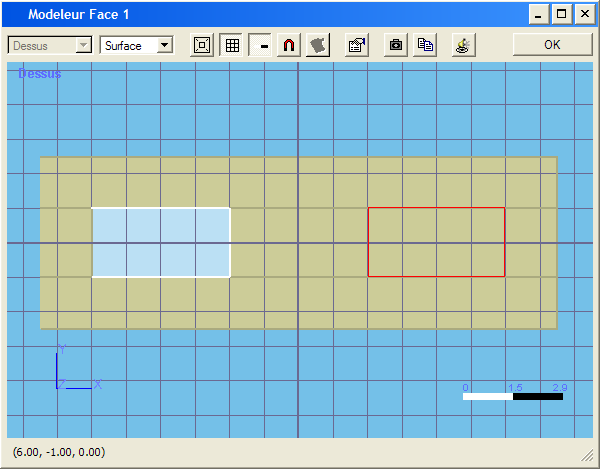

Ce modeleur permet d'éditer les faces des éléments de machine ou les murs des étages. Il permet pour les faces de machines de créer des bouches de ventilation ou des cheminées. Pour les murs, il permet de créer des fenêtres.
La barre d'outils Face fournit les différents outils nécessaire à la création de sous-faces.